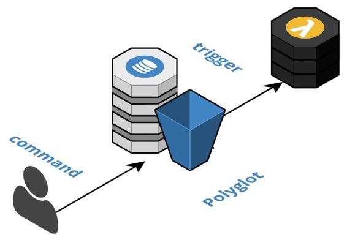

Cloud-Native Databases Per Component
Leverage one or more fully managed cloud-native databases that are not shared across components and react to emitted events to trigger intra-component processing logic.
